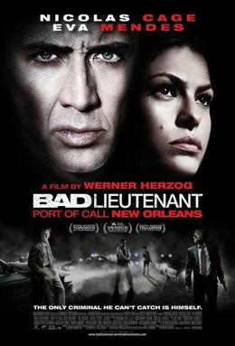

Werner Herzog
2009
122 minutes
TITLE: Bad Lieutenant: Port of Call New Orleans TEXT PLACEHOLDER 026
This is Werner Herzog directing a crime/action movie starring Nicolas Cage. The universe may have led you astray a few times into thinking the movie won't live up to a description like that. You assume maybe Nicolas Cage or Werner Herzog will play it kinda straight. But no. This is unmistakably Werner Herzog directing a crime/action movie starring Nicolas Cage. Oh, and you'll run across Jennifer Coolidge, Val Kilmer, Brad Dourif, Xzibit, and even Fairuza Balk before this thing is over. There's also an iguana. Maybe. There's certainly some elder abuse.
This movie is only related to the other Bad Lieutenant character in name and in the fact that it does contain a character who is a drug-addled shithead with gambling debts who has the rank of Lieutenant in some police force.
At the end of the movie you are invited to ponder whether fish have dreams. You decide to google this and find that some fish do experience REM-like "rest phases" with heightened brain activity. For all you know, that's what you're doing right now. There is a nonzero chance that if you pinch yourself you will wake up and find that you are a zebrafish, in which case:
Your adventure has come to an end.
Or if you aren't ready to wake up and start slurping down brine shrimp again, you're welcome to keep the party going and watch another film intended for humans...
Time to choose something different: